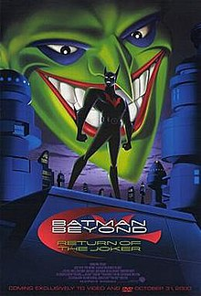

Return of the Joker features the DC Comics superheroes Bruce Wayne (Kevin Conroy) and Terry McGinnis (Will Friedle), as they try and unravel the mysterious return of the former's archenemy, the Joker (Mark Hamill).

"This feature length entry in the Batman Beyond mythos sends off the Mark Hamill-voiced Joker in thrilling fashion, hitting the same caped crusading peaks of the original series."